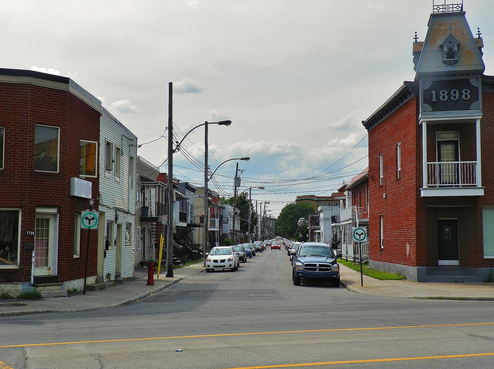

Village house of Longue-Pointe La maison villageoise de Longue-Pointe (maison en carré de bois)

"Lepailleur street in Mercier neighbourhood, Montreal, Quebec, Canada" by Félix Mathieu-Bégin (User:Webfil), 6 January 2014, Wikimedia Commons, CC BY-SA 4.0 — licence read on the Commons API before download. File: https://commons.wikimedia.org/wiki/File:Mercier,_rue_Lepailleur.jpg
What was on the ground before any of the rest of it. Small squared-timber houses sheathed in board, shingle or brick, strung along the old chemin du Roy around a parish founded in 1722 — the oldest settlement layer in the borough, and the one most thoroughly cut apart, first by the tramway that reached the end of the island in 1897 and then by the bridge-tunnel approaches of the early 1960s.
Longue-Pointe is the borough's French-regime layer. A wooden redoubt went up on the shore about 1670 in the chain of forts protecting Ville-Marie; a chapel and presbytery followed at the turn of the eighteenth century; Saint-François-d'Assise de la Longue Pointe became, in 1722, one of the few parishes erected on the island under the French regime, and the territory became a municipality in 1845. In 1825 the parish counted 67 houses, holding « de nombreux artisans, des aubergistes, des rentiers, des journaliers mais surtout des agriculteurs ». Its urbanisation came late precisely because it was far from Montréal's economy, and the cahier says so: development « se fera plus tardivement que celui des municipalités voisines (Hochelaga et Maisonneuve) puisqu'elle est située assez loin du centre des activités économiques de Montréal ». Longue-Pointe, Beaurivage and Tétraultville were all annexed to Montréal in 1910.
| Tenure / plan | single-family |
|---|---|
| Storeys | 1.5 |
| Roof form | – |
| Roof pitch | – |
| Window proportion | vertical |
| Principal cladding | wood-clapboard, wood-shingle, clay-brick |
| Roofing | – |
| Garage | none |
| Lot width | – |
| Front setback | – |
| Side setback | – |
| Front yard green | – |
What Évaluation du patrimoine urbain (2005) says about this type
- Along the old chemin du Roy — the present rue Notre-Dame Est — and the village streets running off it, around the parish church of Saint-François-d'Assise on the river bank; the church itself has been demolished.
- The village core was « largement amputé » when the Louis-Hippolyte-Lafontaine bridge-tunnel was built in the early 1960s, so what survives is a fragment, not a continuous frontage.
- Small village gabarit, one to one-and-a-half occupied levels.
- –
- –
- Squared-timber walls — « maisons en carré de bois » — most often sheathed in wood boards or wood shingles, and sometimes in clay brick.
The entire documentary basis for this record is one sentence of sector fiche 27.I.3: « il présente encore aujourd'hui un bâti villageois typique : maisons en carré de bois, souvent recouvertes de planches ou de bardeaux de bois et parfois de brique d'argile. » That sentence gives wall construction and cladding and nothing else, so roof form, storey count beyond the small village gabarit, articulation and openings are left null or empty rather than inferred from the photograph. Sector 27.I.3 is not encoded in this page's sectors.yaml, which carries only the five E sectors; the I, U, N and AP sectors of arrondissement 27 are Part 10b work, and the sector reference is therefore made in this note instead of in the `sectors` field. One building in the photographed street carries a raised and ornamented parapet with a 1898 date panel — a boomtown crown, and this borough's only observed instance — but the cahier does not name the form, so it is recorded here and not encoded as a type.
Same word elsewhere
- Rural house of French inspiration (Charlesbourg (Trait-Carré))
- Québec house of neoclassical inspiration (Charlesbourg (Trait-Carré))
- Mansard house (Charlesbourg (Trait-Carré))
- Cubic house (Four Square) (Charlesbourg (Trait-Carré))
- Industrial vernacular house (Charlesbourg (Trait-Carré))
- Central-gable house (maison à pignon central) (Gatineau)
- Complex gabled-roof house (maison à toit complexe à pignon) (Gatineau)
- Mansard-roofed house with gable wall on the façade (maison à toit mansardé avec mur pignon en façade) (Gatineau)
- One-and-a-half-storey wooden matchstick house (maison allumette en bois d'un étage et demi) (Gatineau)
- Wood matchstick house of two to two and a half storeys (maison allumette en bois de deux à deux étages et demi) (Gatineau)
- Brick matchbox house, two to two and a half storeys (maison allumette en brique de deux à deux étages et demi) (Gatineau)
- Cubic house (maison cubique) (Gatineau)
- CIP executive's house (maison de cadre de la CIP) (Gatineau)
- Flat-roofed wood house (maison en bois à toit plat) (Gatineau)
- Flat-roofed brick house (maison en brique à toit plat) (Gatineau)
- L-plan house with a two-slope (gable) roof (maison avec plan en L à toit à deux versants) (Gatineau)
- English-revival stone house (Hampstead)
- Postwar detached house (Hampstead)
- House of French inspiration (Île d'Orléans)
- Traditional Québec house of neoclassical influence (Île d'Orléans)
- Second Empire style and the mansard house (Île d'Orléans)
- Boomtown house (Île d'Orléans)
- Cubic house (Four Square) (Île d'Orléans)
- Franco-Québécois transitional house (Lévis)
- Québécois traditional house (Lévis)
- Neoclassical house (Lévis)
- Second Empire house (Lévis)
- Victorian house (Lévis)
- American vernacular house (Lévis)
- Beaux-Arts house (Lévis)
- Boomtown house (Lévis)
- Flat-roofed house (Lévis)
- Company workers' house of the Hudon mill, rue Saint-Germain (Mercier–Hochelaga-Maisonneuve (borough of Montréal))
- Veterans' house, to the Wartime Housing Limited model (Mercier–Hochelaga-Maisonneuve (borough of Montréal))
- Garden City House (Town of Mount Royal)
- Faubourg House (Town of Mount Royal)
- Canadian House (Town of Mount Royal)
- New England House (Town of Mount Royal)
- Georgian House (Town of Mount Royal)
- English Manor House (Town of Mount Royal)
- Bungalow (Town of Mount Royal)
- Cottage (Town of Mount Royal)
- Split-Level (Town of Mount Royal)
- Prairie House (Town of Mount Royal)
- Semi-detached single-family house (Outremont (borough of Montréal))
- Detached single-family house (Outremont (borough of Montréal))
- Modern house on the flank (Outremont (borough of Montréal))
- Faubourg house (Le Plateau-Mont-Royal (borough of Montréal))
- Detached urban house (Le Plateau-Mont-Royal (borough of Montréal))
- Row urban house (Le Plateau-Mont-Royal (borough of Montréal))
- One-storey rural house of French inspiration (Québec City)
- Urban stone house of French inspiration (Québec City)
- Franco-Québécois transition house (Québec City)
- London-type terrace house (Québec City)
- Québécois neoclassical house (Québec City)
- Mansard-roofed house (Québec City)
- Rudimentary faubourg house (Québec City)
- Cubic house (Four Square) (Québec City)
- Flat-roofed faubourg house (Québec City)
- Neo-Queen Anne house (Québec City)
- Neo-Tudor house (Québec City)
- Arts and Crafts house (Québec City)
- Dutch Colonial Revival house (Québec City)
- Neo-Georgian house (Québec City)
- Maison shoebox (Rosemont–La Petite-Patrie (borough of Montréal))
- Detached house of the Cité-Jardin du Tricentenaire (Rosemont–La Petite-Patrie (borough of Montréal))
- Traditional French and Québécois house (Saint-Lambert)
- Mansard-roofed house of Second Empire influence (Saint-Lambert)
- Queen Anne style house (Saint-Lambert)
- Boomtown house with false mansard (Saint-Lambert)
- Boomtown house with crown (parapet or cornice) (Saint-Lambert)
- Cubic (Four Square) house (Saint-Lambert)
- House of Arts and Crafts influence (Saint-Lambert)
- The modern house (including the bungalow) (Saint-Lambert)
- Village house (Le Sud-Ouest (Montréal))
- Boomtown house (Le Sud-Ouest (Montréal))
- Urban house (Le Sud-Ouest (Montréal))
- Apartment house (Le Sud-Ouest (Montréal))
- Town house (post-1960 project housing) (Le Sud-Ouest (Montréal))
- Veterans' house (Le Sud-Ouest (Montréal))
- Lower-town company house (Ross and Macdonald, 1918–1923) (Témiscaming)
- Upper-district company house (Somerville, 1925–1950) (Témiscaming)
- Stone house in the French tradition (Vieux-Terrebonne)
- Maison cossue of rue Saint-Louis (Vieux-Terrebonne)
- Neoclassical Québécois stone house (Vieux-Terrebonne)
- Small-gabarit vernacular village house of the Bas-de-la-Côte (Vieux-Terrebonne)
- French-regime house in stone (colonial français) (Trois-Rivières)
- Well-to-do bourgeois house in stone and brick (maison cossue) (Trois-Rivières)
- Boomtown house (Trois-Rivières)
- Cubic house (Four-square) (Trois-Rivières)
- Arts & Crafts house (Trois-Rivières)
- Rural or village house (Villeray–Saint-Michel–Parc-Extension)
- Boomtown house (Villeray–Saint-Michel–Parc-Extension)
- Post-war house (Villeray–Saint-Michel–Parc-Extension)
- Post-war semi-detached house (Villeray–Saint-Michel–Parc-Extension)
- Picturesque villa and country house (Westmount)
- Greystone row house (Westmount)
- Mansard-roofed house of Second Empire influence (Westmount)
- Queen Anne house (Westmount)
- Richardsonian Romanesque house (Westmount)
- Semi-detached brick house (Westmount)
- Eclectic prestige house of the summit (Westmount)
- Tudor Revival house (Westmount)
- Arts and Crafts semi-detached house (Westmount)
- Interwar apartment house (Westmount)
Same form elsewhere
- Village house (Le Sud-Ouest (Montréal))
- Small-gabarit vernacular village house of the Bas-de-la-Côte (Vieux-Terrebonne)
- Rural or village house (Villeray–Saint-Michel–Parc-Extension)
Same period elsewhere
- Rural house of French inspiration (Charlesbourg (Trait-Carré))
- Québec house of neoclassical inspiration (Charlesbourg (Trait-Carré))
- Central-gable house (maison à pignon central) (Gatineau)
- Mansard-roofed house with gable wall on the façade (maison à toit mansardé avec mur pignon en façade) (Gatineau)
- One-and-a-half-storey wooden matchstick house (maison allumette en bois d'un étage et demi) (Gatineau)
- Wood matchstick house of two to two and a half storeys (maison allumette en bois de deux à deux étages et demi) (Gatineau)
- L-plan house with a two-slope (gable) roof (maison avec plan en L à toit à deux versants) (Gatineau)
- House of French inspiration (Île d'Orléans)
- Traditional Québec house of neoclassical influence (Île d'Orléans)
- Regency cottage (Île d'Orléans)
- Second Empire style and the mansard house (Île d'Orléans)
- Victorian eclecticism (Île d'Orléans)
- French-regime house (Régime français) (Lévis)
- Franco-Québécois transitional house (Lévis)
- Québécois traditional house (Lévis)
- Regency cottage (Lévis)
- Neo-Gothic (Lévis)
- Neoclassical house (Lévis)
- Agricultural vernacular building (Lévis)
- Faubourg house (Le Plateau-Mont-Royal (borough of Montréal))
- Detached urban house (Le Plateau-Mont-Royal (borough of Montréal))
- One-storey rural house of French inspiration (Québec City)
- Urban stone house of French inspiration (Québec City)
- Franco-Québécois transition house (Québec City)
- London-type terrace house (Québec City)
- Palladian house (residential Palladian) (Québec City)
- Neo-Gothic house, villa or cottage (Québec City)
- Québécois neoclassical house (Québec City)
- Regency cottage (Québec City)
- Regency villa (Québec City)
- Mansard-roofed house (Québec City)
- Rudimentary faubourg house (Québec City)
- Traditional French and Québécois house (Saint-Lambert)
- Village house (Le Sud-Ouest (Montréal))
- Stone house in the French tradition (Vieux-Terrebonne)
- Maison cossue of rue Saint-Louis (Vieux-Terrebonne)
- Neoclassical Québécois stone house (Vieux-Terrebonne)
- Small-gabarit vernacular village house of the Bas-de-la-Côte (Vieux-Terrebonne)
- French-regime house in stone (colonial français) (Trois-Rivières)
- Rural or village house (Villeray–Saint-Michel–Parc-Extension)
- Picturesque villa and country house (Westmount)
Same style elsewhere
- Québec house of neoclassical inspiration (Charlesbourg (Trait-Carré))
- Central-gable house (maison à pignon central) (Gatineau)
- Traditional Québec house of neoclassical influence (Île d'Orléans)
- Franco-Québécois transitional house (Lévis)
- Québécois traditional house (Lévis)
- Neoclassical house (Lévis)
- Franco-Québécois transition house (Québec City)
- London-type terrace house (Québec City)
- Québécois neoclassical house (Québec City)
- Rudimentary faubourg house (Québec City)
- Traditional French and Québécois house (Saint-Lambert)
- Neoclassical Québécois stone house (Vieux-Terrebonne)
- Well-to-do bourgeois house in stone and brick (maison cossue) (Trois-Rivières)